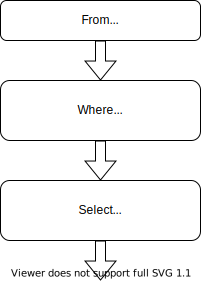

Tutorial
SQL and FunSQL
SQL is a specialized language used for querying and manipulating data in database management systems.
FunSQL is a Julia library for assembling SQL queries. It exposes full expressive power of SQL through a uniform compositional interface.
Sample Database
Throughout this tutorial, we use a tiny SQLite database containing a 10 person sample of simulated patient data, which is extracted from the CMS DE-SynPuf dataset.
To follow along with the tutorial, you can download the database file using the following code:
const URL = "https://github.com/MechanicalRabbit/ohdsi-synpuf-demo/releases/download/20210412/synpuf-10p.sqlite"
const DB = download(URL)Alternatively, to avoid downloading the file more than once, we can register the download URL as an artifact and use Pkg.Artifacts API to fetch it:
using Pkg.Artifacts, LazyArtifacts
const DB = joinpath(artifact"synpuf-10p", "synpuf-10p.sqlite")To interact with a SQLite database, we need to install the SQLite package. Once the package is installed, we can use it to connect to the database:
using SQLite
const conn = SQLite.DB(DB)Database Schema
The data in the sample database is stored in the format of the OMOP Common Data Model, an open source database schema for observational healthcare data. In this tutorial, we will only use a small fragment of the Common Data Model.

Before we can start assembling queries with FunSQL, we need to make FunSQL aware of the database schema. Specifically, for each table in the database, we need to create a corresponding SQLTable object, which encapsulates the table name and its columns.
using FunSQL: SQLTableThe patient data, including basic demographic information, is stored in the table person:
const person =
SQLTable(:person,
columns = [:person_id, :year_of_birth, :location_id])Patient addresses are stored in a separate table location, linked to the person table by the key location_id:
const location =
SQLTable(:location,
columns = [:location_id, :city, :state])The bulk of patient data consists of clinical events: visits to healthcare providers, recorded observations, diagnosed conditions, prescribed medications, etc. In this tutorial we only use two types of events, visits and conditions:
const visit_occurrence =
SQLTable(:visit_occurrence,
columns = [:visit_occurrence_id, :person_id,
:visit_concept_id,
:visit_start_date, :visit_end_date])
const condition_occurrence =
SQLTable(:condition_occurrence,
columns = [:condition_occurrence_id, :person_id,
:condition_concept_id,
:condition_start_date, :condition_end_date])The specific type of the event (e.g., Inpatient visit or Essential hypertension condition) is indicated using a concept id column, which refers to the concept table:
const concept =
SQLTable(:concept,
columns = [:concept_id, :concept_name])Different concepts may be related to each other. For instance, Essential hypertension is a Hypertensive disorder, which itself is a Disorder of cardiovascular system. Concept relationships are recorded in the corresponding table:
const concept_relationship =
SQLTable(:concept_relationship,
columns = [:concept_id_1, :concept_id_2, :relationship_id])Using FunSQL
In FunSQL, a SQL query is represented as a data processing pipeline assembled from elementary data processing operations, each of which represents a particular SQL clause. Depending on its type, the operation may expect zero, one or more input datasets, and it always emits one output dataset. Visually, we can represent a SQL operation as a pipeline node with a certain number of input arrows and one output arrow.

To demonstrate query construction with FunSQL, let us consider the following question:
Who are the patients born between 1930 and 1940 and what is their current age (by the end of 2020)?
To answer this question, we assemble a simple SQL pipeline.

In FunSQL notation, pipeline nodes are created using appropriate SQLNode constructors, such as From, Where, and Select, which are connected together using the pipe (|>) operator:
using FunSQL: From, Fun, Get, Select, Where
q = From(person) |>
Where(Fun.and(Get.year_of_birth .>= 1930,
Get.year_of_birth .< 1940)) |>
Select(Get.person_id,
:age => 2020 .- Get.year_of_birth)Some of the SQLNode constructors take scalar expressions as arguments. For example, Where expects a predicate expression:
Where(Fun.and(Get.year_of_birth .>= 1930,
Get.year_of_birth .< 1940))The argument of this Where node is assembled using Get references, Fun invocations, and broadcasted operators. The expression Get.year_of_birth refers to the column year_of_birth of the input dataset. The SQL operator AND is represented by a function Fun.and. Any SQL function or operator can be represented in this manner. Certain functions and operators, notably, comparison operators, could also be expressed using Julia broadcasting notation.
Once the query pipeline is constructed, it could be serialized to a SQL query. We can specify the target SQL dialect, such as :sqlite or :postgresql:
using FunSQL: render
sql = render(q, dialect = :sqlite)
print(sql)
#=>
SELECT "person_1"."person_id", (2020 - "person_1"."year_of_birth") AS "age"
FROM "person" AS "person_1"
WHERE (("person_1"."year_of_birth" >= 1930) AND ("person_1"."year_of_birth" < 1940))
=#At this point, the job of FunSQL is done. To submit the SQL query to the database engine, we can use suitable Julia database bindings:
res = DBInterface.execute(conn, sql)
#-> SQLite.Query( … )The output of the query could be displayed in a tabular form by converting it to a DataFrame object:
using DataFrames
res |> DataFrame |> display
#=>
2×2 DataFrame
Row │ person_id age
│ Int64 Int64
─────┼──────────────────
1 │ 30091 88
2 │ 72120 83
=#